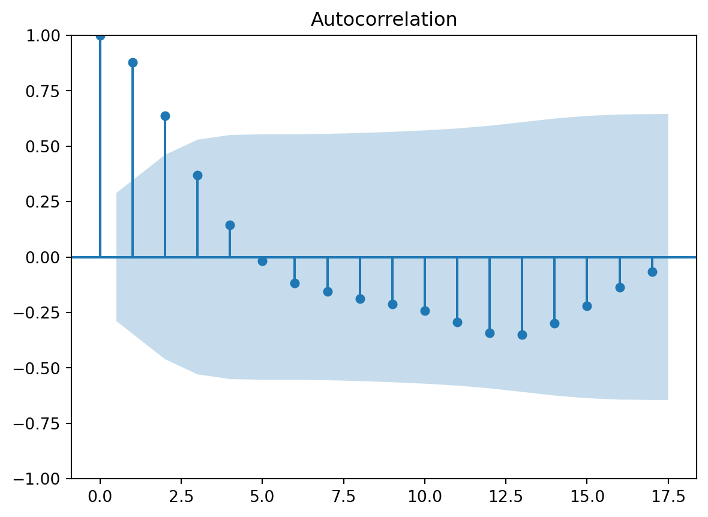
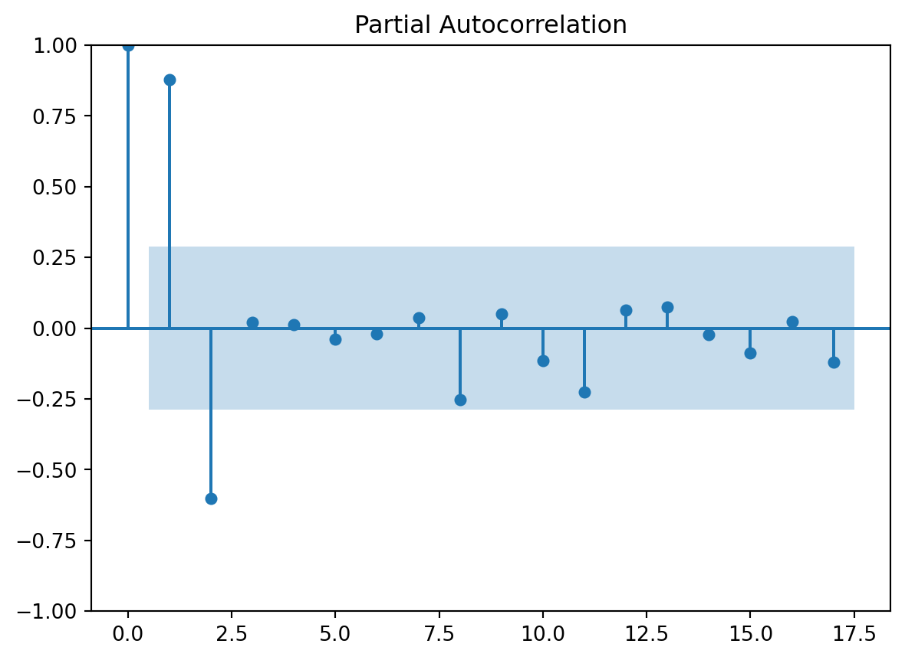
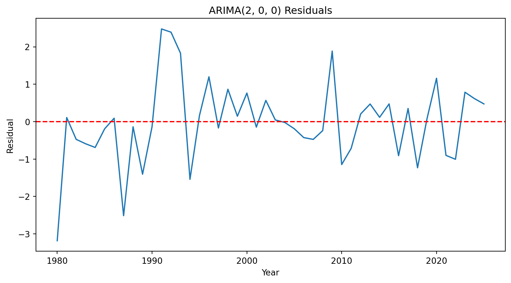
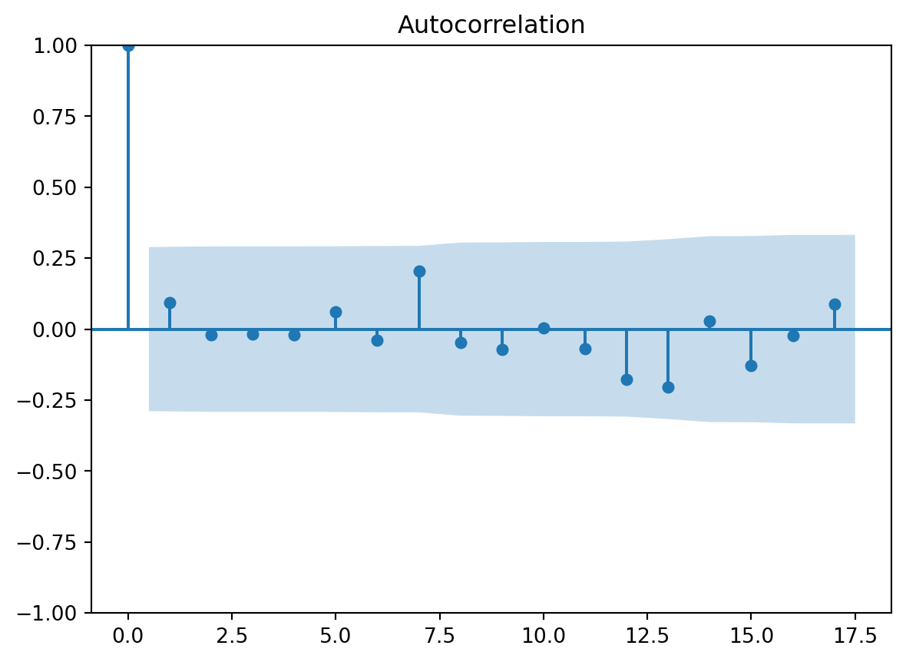

How to create and interpret ACF and PACF plots for time series analysis and modeling
Published
November 17, 2026
Introduction
Visualization is one of the most important steps when exploring time series datasets. In this article, we will explore two important types of time series visualizations: ACF and PACF plots. These visualizations are essential tools for understanding time series data, particularly if you are planning to model your data using ARIMA. They reveal how observations within a time series relate to one another in ways that may not be apparent from other types of visualizations.
This article is intended as a primer on the topic. We will provide a high-level overview of what ACF and PACF plots are, how to create them in Python, and how they can help you understand and model your time series data.
We will focus on the following questions:
What are ACF and PACF plots?
How do you create them in Python?
How can ACF and PACF plots help with ARIMA forecasting?
Let’s explore the first of these questions.
What are ACF and PACF plots?
One of the unique aspects of time series data is the concept of autocorrelation.
Correlation is a familiar topic in data analytics. It describes and measures the association between two variables or features. For instance, you could talk about the correlation between height and weight, tobacco use and cancer rates, or age and car insurance costs. Correlation can be positive or negative in direction, and weak, moderate, or strong in magnitude.
Time series data often possess a unique type of correlation: a correlation between the values of the time series and their own past values. This is known as autocorrelation, and it is one of the patterns that statistical time series models like ARIMA use to make predictions.
Notice that we are speaking in terms of association, not causation. Understanding what drives a time series (that is, the causes behind it) is a separate and often more difficult task than understanding how observations within the series are associated with one another. Today’s temperature is likely to be associated with yesterday’s temperature, but that does not mean today’s temperature is caused by yesterday’s temperature.
The ACF (Autocorrelation Function) and PACF (Partial Autocorrelation Function) describe the relationship between observations in a time series and observations from previous time steps. They can be calculated as standalone summary statistics, but they are especially useful when displayed visually. ACF and PACF plots allow us to see how observations in a time series are associated with previous observations. They help answer the question: “How and to what extent are past values associated with current values?”
Although they are related, ACF and PACF plots display different information.
An ACF plot shows the correlation between a time series and its past values at different lags. This helps you identify how strongly current values are associated with previous observations.
A PACF plot is similar, but with one important distinction: it measures the relationship between the current value and a particular lag after accounting for the effects of all intervening lags. This helps you identify the direct linear relationship between the current value and each lag, after controlling for the shorter lags in between.
Even if you do not end up using an ARIMA model for your time series, ACF and PACF plots can be valuable tools for understanding the behavior of your data. However, they are especially useful when identifying potential parameters for an ARIMA model, as we will discuss later in this article.
Before we go any further, let’s build some ACF and PACF plots in Python.
How to create ACF and PACF plots in Python
Creating ACF and PACF plots in Python is straightforward. You can do it with two functions from the statsmodels module: plot_acf() and plot_pacf(). More information about these functions can be found here and here.
We will demonstrate this in the following code cells, using the annual unemployment rate for Finland from 1980 to 2025, available from the World Bank.
import pandas as pd # For loading and manipulating the dataimport matplotlib.pyplot as plt # For creating visualizationsfrom statsmodels.graphics.tsaplots import plot_acf, plot_pacfdata = pd.read_csv('world_unemployment.csv') # Load data from CSV# Filter the data to include only Finlanddata = data.loc[data['country'] =='Finland'].copy()# Make sure the year column is numericdata['year'] = pd.to_numeric(data['year'])# Set the year as the index and remove the country columndata = data.set_index('year')data = data.drop(columns=['country'])# Keep only observations from 1980 through 2025data = data.loc[1980:2025].sort_index()# Check the first few rows and the number of observationsdata.head()data.shape
(46, 1)
We should now have 46 annual observations, covering 1980 through 2025. It is also worth checking that there are no missing values in the unemployment rate before proceeding.
Now that we have our data loaded and prepared, we will skip the usual exploration steps and go straight to our ACF and PACF plots.
There are several parameters you can use to customize these functions. For example, you can control the number of lags to include, the title, whether to display vertical lines or just markers, and whether to include lag 0. For now, however, we will use the default parameters and simply pass in our unemployment rate data.
# Generate the ACF and PACF plotsplot_acf(data['unemployment_pct'])plot_pacf(data['unemployment_pct'])plt.show()


Great! Now that we have our plots, let’s walk through a few important things to understand about them.
The x-axis represents lags. A lag is a previous time step in the series. For annual data like ours, lag 1 represents the previous year, lag 2 represents two years earlier, and so on.
The y-axis represents the autocorrelation value, ranging from -1.00 to 1.00. Positive values indicate a positive association, while negative values indicate a negative association.
The blue shaded region represents an approximate confidence interval around zero. Points outside this region provide evidence of statistically significant autocorrelation at the corresponding lag, using the confidence level specified in the plot. Points inside the region do not provide strong evidence that the autocorrelation differs from zero.
The marker at lag 0 represents the series correlated with itself, so it will always equal 1.00. By default, this marker is displayed even though it does not provide much useful information for interpreting the other lags. You can hide it using the zero parameter of the plot_acf() and plot_pacf() functions.
How can ACF and PACF plots help with ARIMA forecasting?
In this last section, we will consider what these plots can tell us about our time series and, specifically, how they can help us identify potential AR (p) and MA (q) orders for an ARIMA model.
Points that lie outside the blue shaded region in the ACF plot provide evidence of a significant correlation between observations in the time series and observations at the corresponding lags. However, the ACF does not separate the relationship at a given lag from the relationships at the intervening lags. In other words, the correlation we see at a particular lag may partly reflect the influence of other lags.
The PACF plot helps address this issue. Points outside the blue shaded region indicate that the relationship between the current value and the corresponding lag remains statistically significant after accounting for the intervening lags. This gives us a better sense of the direct linear relationship associated with each lag.
In our case, notice that the ACF plot has significant points at lag 1 and lag 2.
The point at lag 1 is approximately 0.9, indicating a very strong positive correlation between the current value and the value one time step earlier. The point at lag 2 is approximately 0.6, indicating a strong positive correlation between the current value and the value two time steps earlier.
Everything from lag 3 onward falls within the blue shaded region, which represents the approximate confidence interval. However, notice that the correlations do not suddenly drop to zero. Instead, they gradually decrease, suggesting a gradual decay rather than a sharp cutoff.
Moving to the PACF plot, we find a similar story at lag 1: a very strong positive relationship.
However, notice that the point at lag 2 is now showing a strong negative relationship. This means that after accounting for the relationship between the current value and the value one time step earlier, the remaining relationship between the current value and the value two time steps earlier is negative.
This is an interesting observation because it tells us that the relationship at lag 2 changes considerably once we account for lag 1. Importantly, this does not mean that the overall correlation at lag 2 is negative. As we saw in the ACF plot, that correlation is still positive. The negative PACF value describes the relationship that remains after accounting for lag 1.
Finally, notice that the PACF appears to have a sharp cutoff after lag 2. Everything from lag 3 onward is much closer to zero, with some fluctuations around it.
Putting this in the context of Finland’s unemployment rate from 1980–2025, we can see that the annual unemployment rate tends to have a strong positive correlation with the preceding year. In other words, periods of relatively high unemployment tend to be followed by similarly high unemployment, and vice versa.
The PACF, however, reveals something more interesting. After accounting for the relationship with the preceding year, the remaining relationship with unemployment two years earlier is negative. This may suggest some degree of cyclical behavior in the unemployment rate, potentially reflecting the way economic conditions evolve over time.
However, we should be careful not to interpret this as definitive evidence of a two-year economic cycle. It is an interesting pattern that warrants further investigation, rather than proof of a specific economic cycle.
Using ACF and PACF plots to choose ARIMA orders
As it pertains to ARIMA modeling, we can use the ACF and PACF plots to help identify potential Moving Average (MA) and Autoregressive (AR) orders for our model.
A common guideline is that an MA(q) process has an ACF that cuts off after lag q, while its PACF gradually tails off. An AR(p) process tends to show the opposite pattern: its PACF cuts off after lag p, while its ACF gradually tails off.
In our case, the ACF gradually tapers off, while the PACF appears to cut off after lag 2. This suggests an AR(2) model as a reasonable starting point.
The following guide summarizes these common patterns. It is based on Nielsen (2019, p. 187).
# A quick guide to interpreting ACF and PACF plotsacf_pacf_guide = pd.DataFrame( {'Plot Type': ['ACF', 'PACF'],'AR(p)': ['Tails off slowly', 'Sharp cutoff after lag p'],'MA(q)': ['Sharp cutoff after lag q', 'Tails off slowly'],'ARMA': ['No sharp cutoff', 'No sharp cutoff'] })acf_pacf_guide
Plot Type
AR(p)
MA(q)
ARMA
0
ACF
Tails off slowly
Sharp cutoff after lag q
No sharp cutoff
1
PACF
Sharp cutoff after lag p
Tails off slowly
No sharp cutoff
Keep in mind that these are general guidelines, not strict rules. Real-world time series do not always follow these patterns perfectly, and ACF and PACF plots alone cannot determine the best model. It is good practice to compare several candidate models and examine their residuals before settling on one.
We will leave the differencing order, d, at 0 for this example because we are modeling the original, undifferenced series. However, this choice should ideally be supported by checking whether the series is stationary. Tests such as the Augmented Dickey-Fuller (ADF) test and the KPSS test can help assess stationarity and whether differencing may be appropriate.
Let’s fit an ARIMA(2, 0, 0) model.
from statsmodels.tsa.arima.model import ARIMA# Create and fit the ARIMA(2, 0, 0) modelmodel = ARIMA(data['unemployment_pct'], order=(2, 0, 0)).fit()# Generate the model summarymodel.summary()
C:\Users\Joel\AppData\Local\Programs\Python\Python313\Lib\site-packages\statsmodels\tsa\base\tsa_model.py:473: ValueWarning: An unsupported index was provided. As a result, forecasts cannot be generated. To use the model for forecasting, use one of the supported classes of index.
self._init_dates(dates, freq)
C:\Users\Joel\AppData\Local\Programs\Python\Python313\Lib\site-packages\statsmodels\tsa\base\tsa_model.py:473: ValueWarning: An unsupported index was provided. As a result, forecasts cannot be generated. To use the model for forecasting, use one of the supported classes of index.
self._init_dates(dates, freq)
C:\Users\Joel\AppData\Local\Programs\Python\Python313\Lib\site-packages\statsmodels\tsa\base\tsa_model.py:473: ValueWarning: An unsupported index was provided. As a result, forecasts cannot be generated. To use the model for forecasting, use one of the supported classes of index.
self._init_dates(dates, freq)
SARIMAX Results
Dep. Variable:
unemployment_pct
No. Observations:
46
Model:
ARIMA(2, 0, 0)
Log Likelihood
-65.962
Date:
Tue, 17 Nov 2026
AIC
139.923
Time:
11:48:02
BIC
147.238
Sample:
0
HQIC
142.663
- 46
Covariance Type:
opg
coef
std err
z
P>|z|
[0.025
0.975]
const
8.4719
0.938
9.035
0.000
6.634
10.310
ar.L1
1.4996
0.074
20.301
0.000
1.355
1.644
ar.L2
-0.6818
0.083
-8.187
0.000
-0.845
-0.519
sigma2
0.9689
0.197
4.914
0.000
0.582
1.355
Ljung-Box (L1) (Q):
0.69
Jarque-Bera (JB):
1.54
Prob(Q):
0.41
Prob(JB):
0.46
Heteroskedasticity (H):
0.28
Skew:
0.32
Prob(H) (two-sided):
0.02
Kurtosis:
3.62
Warnings: [1] Covariance matrix calculated using the outer product of gradients (complex-step).
There is a lot we could consider in this model summary, but there are a few things worth pointing out:
The estimated AR coefficients have p-values below 0.001, indicating strong evidence that they are different from zero under the model’s assumptions.
The coefficient for lag 1 is approximately 1.4996, a positive coefficient. The coefficient for lag 2 is approximately -0.6818, a negative coefficient. These signs are consistent with the pattern we observed in the PACF plot. However, it is important to remember that model coefficients are not the same thing as correlation coefficients. They represent the estimated contributions of the lagged observations in the fitted AR model.
The AIC and BIC values are useful for comparing this model with other candidate models fitted to the same data. They do not tell us much in isolation; lower values generally indicate a better balance between model fit and complexity when comparing models on the same dataset.
One more step will help us evaluate the suitability of our model: examining its residuals. Residuals are the differences between the observed values and the values predicted by the fitted model.
We can access them using the .resid property of our fitted ARIMA model.
# Extract the residualsresiduals = model.resid# Plot the residuals over timeplt.figure(figsize=(10, 5))plt.plot(residuals.index, residuals)plt.axhline(y=0, color='red', linestyle='--')plt.title('ARIMA(2, 0, 0) Residuals')plt.xlabel('Year')plt.ylabel('Residual')plt.show()

Ideally, residuals should fluctuate randomly around zero, without any obvious patterns or systematic structure. If a pattern remains, it may indicate that the model has not captured all of the information in the time series.
What we see here is mostly encouraging. The residuals appear to fluctuate around the zero line, with no obvious remaining pattern. However, they do show some increased variance in the 1990s. This is worth investigating, as it may indicate that the variability of the errors is not constant over time.
We can also examine the ACF plot of the residuals to see whether any autocorrelation remains. Ideally, most residual autocorrelations should fall within the approximate confidence intervals. A Ljung-Box test can provide an additional check for remaining autocorrelation across multiple lags.
from statsmodels.graphics.tsaplots import plot_acffrom statsmodels.stats.diagnostic import acorr_ljungbox# Plot the residual ACFplot_acf(residuals)plt.show()# Test for remaining autocorrelation at several lagsacorr_ljungbox(residuals, lags=[5, 10], return_df=True)

lb_stat
lb_pvalue
5
0.702527
0.98283
10
3.605327
0.96340
It is important to remember that, when dealing with a relatively small dataset like this one, we may not achieve an exceptional model, especially on our first attempt. In a real-world project, we would create and compare several candidate models, considering their AIC and BIC values, residual plots, diagnostic tests, and performance in time-series cross-validation. We would also investigate any signs of changing residual variance before deciding which model is most appropriate.
Conclusion
To sum up, ACF and PACF plots are valuable tools for understanding time series data and identifying appropriate starting points for ARIMA model orders. They are easy to create in Python, but interpreting them takes some practice.
I would encourage you to find a time series dataset, create its ACF and PACF plots, and see if you can identify potential AR and MA orders. Then, try fitting a model and examining its residuals to see how well it captures the patterns in your data. A little practice goes a long way.